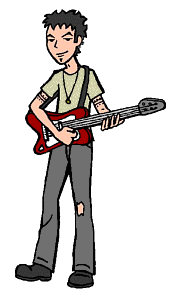

Full Name: Trent Lane
Current Age: 23
Season One Age: 21
Vocation: Musician
Parents: Vincent and Amanda Lane
Siblings: Jane, Penny, Summer, and Wind
First Appearance: The Invitation
When the term "slacker" was coined, they must have had Trent in mind. Having graduated from Lawndale High several years ago, Trent now spends most of his time playing guitar in, and writing songs for, his band, Mystik Spiral. He's turned sleeping into an art form -- no schedule can hold him down! -- and has attained a level of laziness that makes the biggest couch potato on Earth look like a hummingbird on amphetamines.
Being soft-spoken and handsome hasn't exactly hurt Trent; he maintains an on-again, off-again relationship with a fellow musician, Monique, and he used to leave the normally articulate and self-assured Daria at a complete loss for words, but his slacker ways and his inability to stick to commitments eventually crushed her crush. He and Daria are now good friends; he's helped her out on more than several occasions, most significantly by giving her several uncanny insights into her relationship with Tom Sloane and being a sounding board during the summer period when Daria and Jane were on the outs (as chronicled in "Is It Fall Yet?").
Above and beyond all else, however, Trent has maintained a close relationship with Jane, acting as sort of a surrogate parent in the face of Amanda and Vincent's long absences. If "Janey" heads off to college (or art school) after graduation, however, it would be interesting to see if Trent would maintain a steady course, or slowly lose his way due to the lack of her steadying influence in his life.
Daria on Trent:
Jane's older brother. Musician and philosopher. His philosophy involves not making any sudden movements... or gradual ones.
|